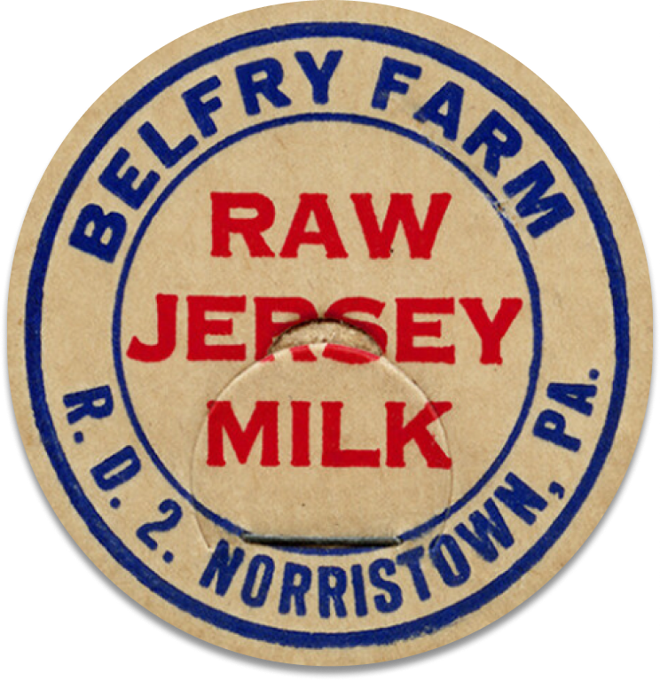

DIVE INTO MY COLLECTION — A MILK CAP A DAY, EVERY DAY.

ITEM: 001
J.F. MURRAY RAW MILK, CIRCA 1940s
EXCELLENT, ALMOST MINT, VIBRANT COLORS
CROSSROADS, PA — 1 5/8" IN DIAMETER, PRISTINE
I FOUND THIS CAP AT AN ANTIQUE SHOP IN LANCASTER. NEAR MINT CONDITION. VERY RARE. NICE PRINT. VINTAGE MILK CAP.
MADE BY STEVE